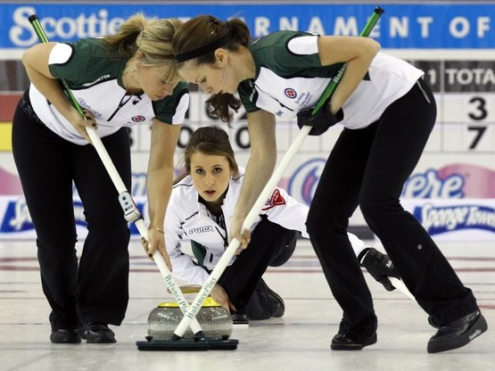
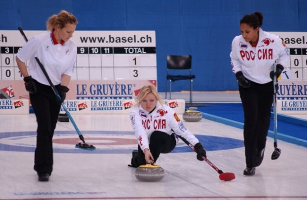
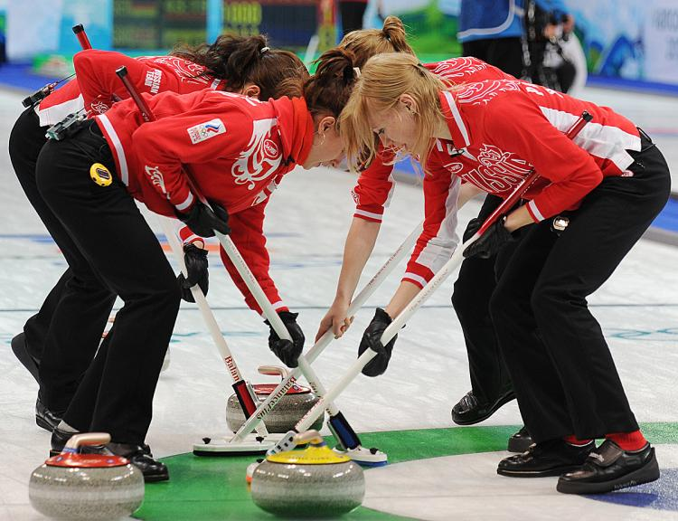
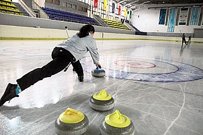
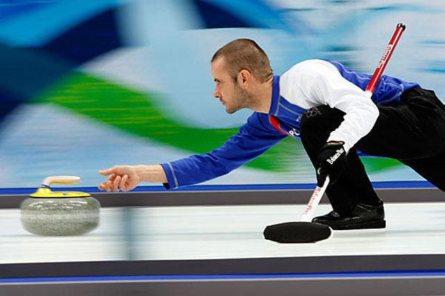

керлинг
Керлинг – из тех видов спорта, где не требуются какие-то выдающиеся физические способности, выносливость и все то, чтобы обычно ассоциируется со спортом.
Скорее, керлинг – соревнования интеллектуальные.
Кто-то назовет его спортом для домохозяек и, что весьма забавно, будет прав. Любая среднестатистическая хранительница очага хотя бы несколько раз в день, но занимается мойкой полов, поэтому она имеет хорошие шансы добиться выдающихся успехов в керлинге. Почему? Ответ лежит на поверхности. Главный атрибут керлинга – швабра. По крайней мере, так думают те, кто наблюдают за игрой со стороны, не особо вникая в суть. На самом деле, это вовсе не швабра, а специальная щетка, и она не играет главной роли. В центре внимания – камень.
Знаете, есть старинная игра в шары. Суть ее заключается в том, чтобы бросить шар как можно ближе к цели и при этом постараться выбить в сторону шар соперника. То же самое в керлинге. Только здесь тяжелые камни. Игрок, который называется скип или вице-скип, толкает специальный игровой снаряд по ледовой дорожке в сторону мишени, которая находится на расстоянии примерно 45 метров. Его задача – попасть как можно ближе к центру мишени. При этом ему вовсе не нужно быть атлетом. Главное, что должно отличать такого игрока, меткость и умение мыслить стратегически.
Но вот скип метнул камень, и на сцену вышли те самые швабры… пардон, щетки. Если вы видите, что игроки усердно надраивают лед перед камнем, знайте: это происходит вовсе не потому, что лед грязный. Действия игроков, которые называют свипом, направлены на то, чтобы скорректировать направление движения камня согласно указаниям скипа. Причем можно «драить» лед, как перед своим камнем, так и перед чужим.
Интересный факт
Вес камня, зафиксированный в международных правилах, — 19 килограммов 960 граммов.
Керлинг в начале XVI века придумали неистощимые на выдумки шотландцы. Не так давно был найден камень, обработанный явно для игры в керлинг, на котором была выбита дата – 1511 год. Вообразите, этот вид спорта в три с лишним раза старше футбола! Можно, конечно, говорить о том, что какой-то прообраз футбола существовал еще у древних китайцев, но речь все-таки о керлинге.
Интересно, что из Шотландии керлинг очень быстро попал в Нидерланды. Между этими странами тогда были очень прочные культурные и торговые связи. Подтверждением тому служат две картины, на которых изображены голландские крестьяне, играющие в айсшток – игру, очень близкую к керлингу. А автором картин был не кто-нибудь, а Питер Брейгель, безусловно, авторитетный очевидец.
Вполне логично, что и первый официальный керлинг-клуб появился в Шотландии. Это случилось в начале XVIII века в провинции Файф. Там же сохранилось старейшая из известных площадок для керлинга. Довершая героический образ Шотландии, подарившей миру столь увлекательную игру, отмечаем, что во всем мире камни для керлинга делают из специального гранита, который добывается на острове Эйлса-Крейг. Естественно, в Шотландии.
Спустя несколько сотен лет керлинг существенно расширил свою географию и стал популярен практически по всему миру. Неудивительно, что с 1998 года его официально включили в программу Олимпийских игр. И, разумеется, Олимпиада в Сочи не обойдется без соревнований по керлингу. Что тут еще сказать… Спасибо шотландцам!
{kind=link}
{kind=link}
{kind=link}
{kind=link}
{kind=link}